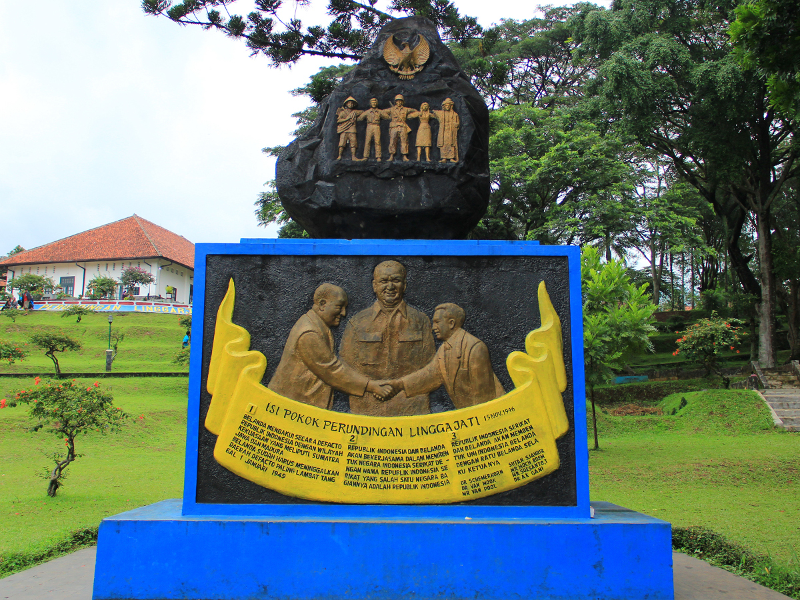

Jelajahi Sejarah Linggarjati
Mengenang perjuangan diplomasi bangsa di kaki Gunung Ciremai.
Selamat datang di portal informasi Museum Gedung Perundingan Linggarjati. Website ini dirancang untuk membawa Anda menyusuri jejak sejarah dan diplomasi yang menentukan nasib kemerdekaan Republik Indonesia pada tahun 1946.
Apa yang bisa Anda temukan?
- Arsitektur Kolonial: Menyaksikan langsung bangunan otentik yang pernah menjadi Hotel Rustoord.
- Koleksi Autentik: Melihat meja, kursi perundingan, dan dokumen naskah asli peninggalan tahun 1946.
- Monumen Perjuangan: Menikmati udara sejuk pegunungan dan monumen batu bersejarah di area taman belakang.
💡 Ingin tahu lebih banyak?
Silakan buka menu Profil untuk membaca sejarah lengkap gedung ini, atau kunjungi menu Kontak untuk informasi lokasi wisata.
Gedung Perundingan Linggarjati

Museum Gedung Perundingan Linggarjati berlokasi di Desa Linggarjati, Kecamatan Cilimus, Kabupaten Kuningan, tepat di kaki Gunung Ciremai. Tempat ini memiliki nilai historis yang sangat tinggi sebagai lokasi berlangsungnya salah satu peristiwa diplomatik terpenting dalam sejarah Indonesia.
Sejarah Gedung: Sebelum menjadi museum, tempat ini memiliki sejarah panjang. Bermula pada tahun 1918 sebagai gubuk milik Ibu Jasitem, kemudian dirombak menjadi bangunan permanen pada 1921, hingga akhirnya dijadikan Hotel "Rustoord" oleh Theo Huitker pada 1935. Pada masa penjajahan Jepang (1942), hotel ini berganti nama menjadi Hokayryokan, dan setelah proklamasi kemerdekaan (1945) dinamakan Hotel Merdeka.
Peristiwa Bersejarah: Pada tanggal 11-12 November 1946, gedung ini terpilih sebagai tempat perundingan antara Pemerintah Indonesia (dipimpin Sutan Sjahrir) dan Pemerintah Belanda (dipimpin Prof. Schermerhorn dan Van Mook), dengan ditengahi oleh diplomat Inggris, Lord Killearn. Peristiwa ini melahirkan naskah sejarah yang dikenal sebagai Perjanjian Linggarjati.
Koleksi Museum: Saat ini, museum memamerkan berbagai peninggalan autentik seperti meja dan kursi sidang asli yang digunakan saat perundingan, tata ruang yang dipertahankan sesuai kondisi aslinya di masa lalu, serta foto-foto dokumentasi para tokoh yang terlibat dalam diplomasi.
Kontak & Lokasi
Museum Gedung Perundingan Linggarjati
Desa Linggarjati, Kecamatan Cilimus, Kabupaten Kuningan, Jawa Barat 45556.
Jam Operasional:
Selasa - Minggu: 08:00 - 16:00 WIB (Senin & Libur Nasional Tutup)
Hubungi Pengelola:
Telepon: (021) 5725549